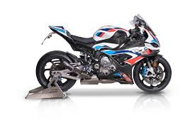
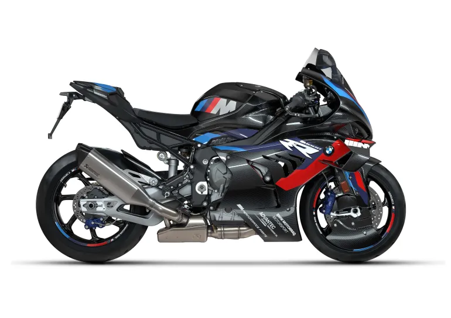
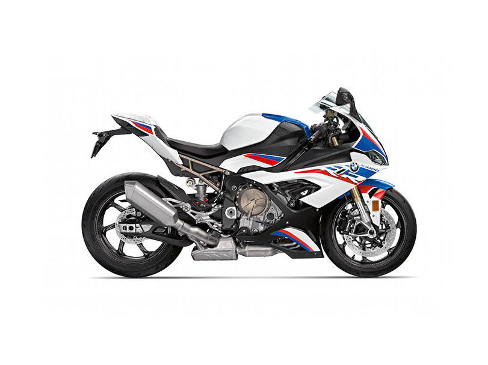
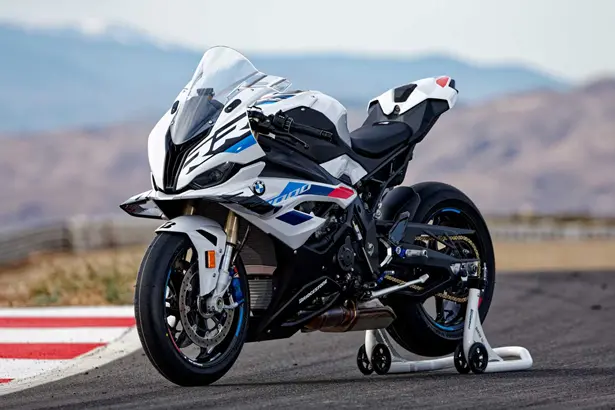

Best-equipped sport bike

Superbike World Championship

Isle of Man TT

Macau Grand Prix

Race Bike
Edgar Heinrich (born c. 1958) is a German automobile designer and motorcycle designer. He began his career at BMW Motorrad as head of vehicle design (motorcycles) from 1986 to 2009, responsible for visual design of the R1150GS and R1200GS, The K1200R and K1200S, and head of the S1000RR sportbike design team.